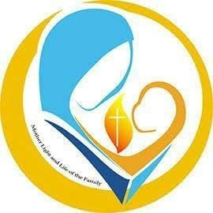
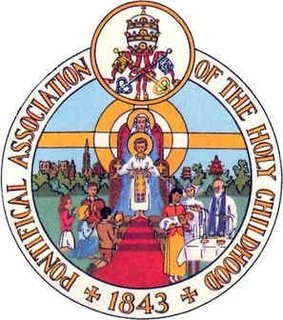

Three threads run through every ministry at Lourde Matha — worship, family, and charity.
Holy Qurbana in the Syro-Malabar rite — Sunday 7:00 & 9:30 AM, Monday to Friday 6:30 AM, Saturday 6:45 AM — with the sacraments, weekly novenas and First Friday adoration.
VIEW MASS TIMINGSCatechism for children and youth, youth fellowship, women's association, choir and altar servers, Legion of Mary and family prayer units — one family in faith.
OUR PARISHCharitable outreach to the poor and the suffering carries our parish mission beyond the church walls — serving Christ in our neighbours around Thalayanadu.
GET IN TOUCHUnited by faith — dedicated organisations rooted in the Syro-Malabar tradition.
Empowers young Catholics through faith, leadership, service, and fellowship — inspiring them to grow spiritually and serve Church and society.

Unites mothers in faith, prayer, and service — strengthening families, promoting Christian values, and inspiring Christ-centered leadership.
Strengthens parish life through family-centered pastoral care, lay participation, evangelization, unity, and spiritual growth.
Cherupushpa Mission League — missionary organisation nurturing faith and mission spirit among children and youth.
Catholic organisation for fathers — helping men grow spiritually and live their vocation as faithful husbands and loving fathers.

Children gathering for special prayers dedicated to Unniyeshu — sowing seeds of faith in young hearts.
International Catholic voluntary organisation dedicated to serving the poor and disadvantaged.
All are welcome · Church open daily 6:00 AM – 8:00 PM
Holy Mass at 7:00 AM and 9:30 AM, with evening prayer and novena to Our Lady of Lourdes at 4:30 PM.
Holy Mass at 6:30 AM Monday to Friday and 6:45 AM on Saturday. First Friday Mass & Adoration; Lourdes Novena on the 11th of every month at 5:30 PM; parish feast every February.
For Mass intentions, certificates, baptisms and marriages, please contact the parish office directly. The Sunday bulletin with weekly announcements is available at the church entrance.
Timings may vary — please confirm with the parish office.